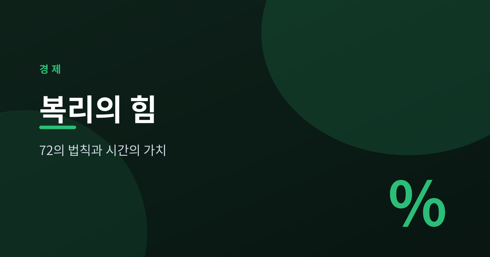
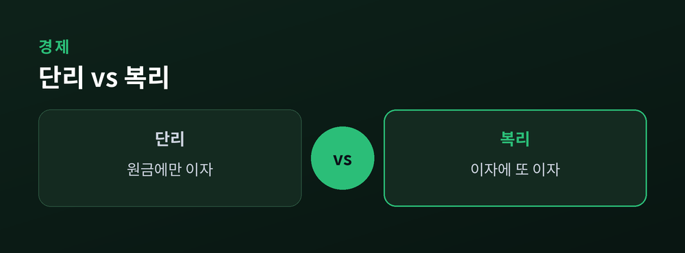
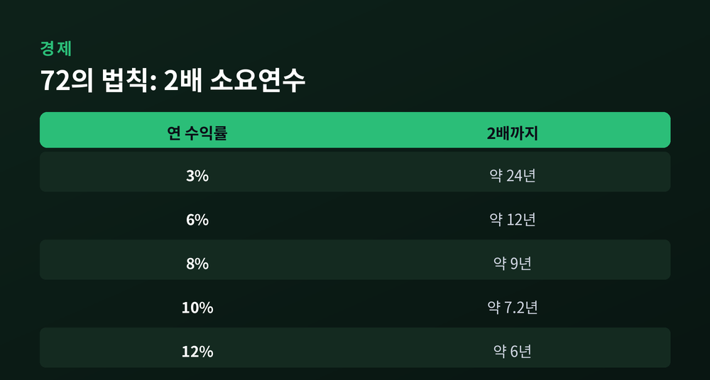
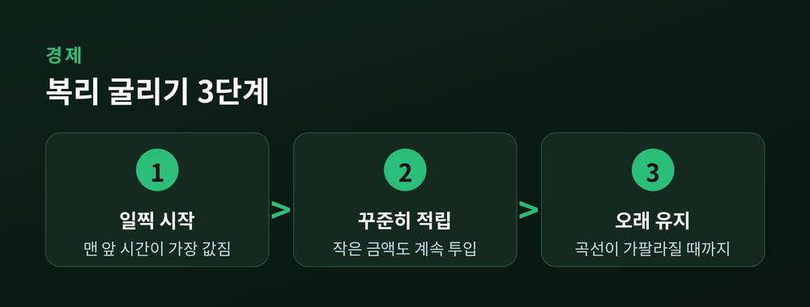
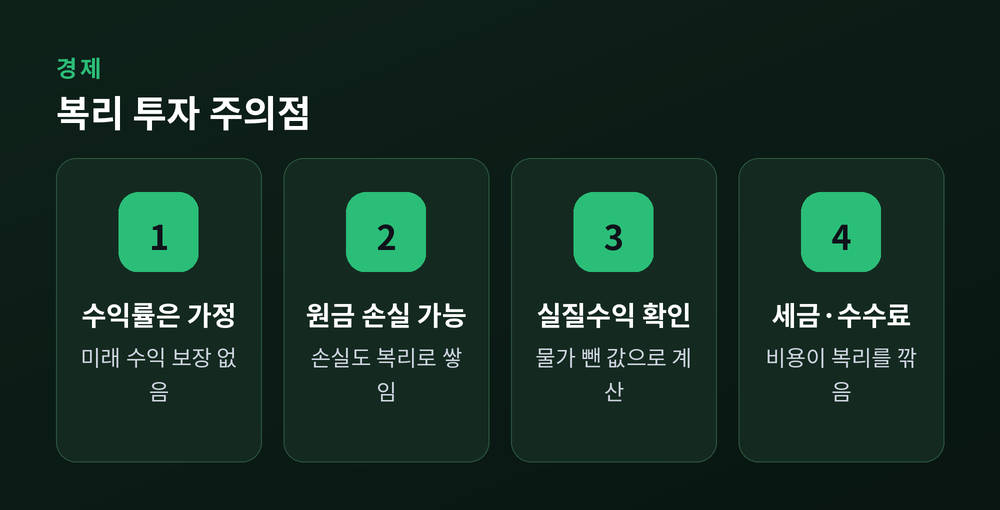

시간이 돈을 굴리는 힘

이번 글에서는 복리와 72의 법칙을 정리해 보겠습니다. 돈을 굴리는 힘이 어디에서 나오는지, 그 원리를 차분히 짚어보려 합니다. 숫자가 조금 나오지만, 계산기 없이도 따라오실 수 있도록 최대한 쉽게 풀어 쓰겠습니다.
먼저 결론부터 말씀드립니다. 복리에서 가장 강한 변수는 수익률도, 복리 주기도 아닙니다. 시간입니다. 그리고 그 시간을 눈대중으로 가늠하게 해주는 도구가 바로 72의 법칙입니다. 이 두 가지만 손에 쥐고 계셔도, 돈이 불어나는 원리의 절반은 이해하신 셈입니다.
아래에서는 단리와 복리의 차이에서 출발해, 복리 공식과 72의 법칙, 복리 주기, 그리고 일찍 시작하는 것의 힘까지 순서대로 살펴보겠습니다. 마지막에는 인플레이션과 반드시 짚어야 할 주의점도 함께 정리합니다.
이자가 붙는 방식은 크게 두 가지입니다.
단리는 원금에만 이자를 붙입니다. 매년 같은 금액의 이자가 나옵니다. 반면 복리는 이자에 다시 이자가 붙습니다. 흔히 "이자가 이자를 낳는다"고 표현하는 방식이 이것입니다.
말로만 보면 사소한 차이 같습니다. 실제로 짧은 기간에는 그렇습니다. 그러나 시간이 쌓이면 이야기가 완전히 달라집니다.

가정 예시를 하나 들어보겠습니다. 원금 1,000만원을 연 5%로 굴린다고 해보죠. 이 수익률은 어디까지나 설명을 위한 가정임을 먼저 밝혀 둡니다.
10년이 지나면 단리는 1,500만원, 복리는 약 1,629만원이 됩니다. 차이는 약 129만원. 솔직히 이 정도로는 크게 와닿지 않습니다.
그런데 기간을 30년으로 늘리면 어떨까요. 단리는 2,500만원, 복리는 약 4,322만원이 됩니다. 차이가 무려 1,822만원으로 벌어집니다.
같은 원금, 같은 수익률입니다. 달라진 것은 시간뿐입니다. 단리는 매년 똑같은 보폭으로 걷는 사람이고, 복리는 걸음마다 보폭이 조금씩 넓어지는 사람입니다. 처음엔 나란히 가지만, 시간이 갈수록 뒷사람은 앞사람을 따라잡을 수 없습니다.
복리 곡선이 뒤로 갈수록 가팔라지는 데에는 이유가 있습니다. 매년 이자가 붙는 '기준'인 원리금 자체가 계속 커지기 때문입니다. 첫해에는 1,000만원에 대해 이자가 붙지만, 20년 뒤에는 그동안 불어난 금액 전체에 이자가 붙습니다. 눈덩이가 커질수록 한 바퀴 굴렀을 때 붙는 눈의 양도 많아지는 것과 같습니다.
예전엔 저도 이 격차가 결국 이자율 차이에서 온다고 여겼습니다. 지금은 그렇지 않다는 것을 압니다. 격차의 정체는 이자율이 아니라, 시간이 그려낸 곡선이었습니다.
복리를 계산하는 기본 공식은 이렇습니다.
A = P × (1 + r/n)^(n×t)
(P=원금, r=연이율, n=연간 복리 횟수, t=연수)
공식이 조금 부담스러우실 수 있습니다. 그래서 사람들이 오래 써온 어림법이 있습니다. 72의 법칙입니다.
방법은 단순합니다. 72를 연 수익률로 나누면, 원금이 두 배가 되는 데 걸리는 대략의 연수가 나옵니다. 연 6%라면 72 나누기 6, 곧 12년입니다. 연 8%라면 9년이고요. 종이도 계산기도 필요 없습니다. 머릿속에서 나눗셈 한 번이면 끝입니다.
왜 하필 72일까요. 복리로 두 배가 되는 정확한 시간을 수학으로 풀면 그 상수는 약 69.3입니다. 그런데 69.3은 나누기가 번거롭습니다. 반면 72는 2, 3, 4, 6, 8, 9, 12로 딱 떨어집니다. 정확도를 조금 양보하는 대신 암산의 편의를 얻은 숫자인 셈입니다.

물론 어림법이니 오차가 있습니다. 자체 검산으로 확인해 보면, 연 6~10% 구간에서는 실제 값과 거의 일치합니다. 연 8%는 72의 법칙으로 9년, 실제로도 약 9.01년이니 오차가 사실상 없다고 봐도 됩니다. 연 10%는 근사치 7.2년, 실제 약 7.27년입니다.
다만 수익률이 아주 낮거나 아주 높으면 오차가 벌어집니다. 연 1%에서는 근사치가 72년, 실제는 약 69.7년으로 2년 넘게 차이가 납니다. 낮은 금리대에서는 72 대신 70이나 69.3을 쓰면 조금 더 정확해집니다. 완벽한 공식이 아니라는 점은 분명히 짚고 넘어가야겠습니다.
이 법칙이 유용한 이유는 단순히 두 배 시점을 알려주는 데 그치지 않습니다. 서로 다른 수익률을 직관적으로 비교하게 해줍니다. 연 4%면 두 배까지 18년, 연 8%면 9년입니다. 수익률이 두 배가 되면 두 배가 되는 데 걸리는 시간은 절반으로 줄어듭니다. 은행 예금과 투자 상품 사이에서 고민하실 때, 이 감각 하나만으로도 시간의 무게를 가늠하실 수 있습니다.
한 가지 더 있습니다. 72의 법칙은 복리에만 적용됩니다. 단리에는 쓰지 않습니다. 이자가 이자를 낳는 구조여야 두 배가 되는 시점을 이렇게 어림할 수 있기 때문입니다.
복리는 얼마나 자주 계산하느냐에 따라서도 결과가 달라집니다. 연 1회, 월 1회, 매일. 자주 계산할수록 원리금이 조금 더 커집니다. 광고에서 "매일 복리"를 강조하는 이유도 여기에 있습니다.
역시 가정 예시로 확인해 보겠습니다. 원금 1,000만원, 연 5%, 30년 기준입니다.
| 복리 주기 | 30년 후 원리금 |
|---|---|
| 연복리 | 약 4,322만원 |
| 월복리 | 약 4,468만원 |
| 일복리 | 약 4,481만원 |
연복리에서 일복리로 바꿔도 차이는 약 159만원입니다. 30년이라는 긴 시간을 감안하면 의외로 작습니다. 주기를 아무리 촘촘히 해도, 늘어나는 이자에는 눈에 보이지 않는 천장이 있는 셈입니다.
여기서 배울 점이 있습니다. 복리 주기에 너무 마음을 쓸 필요는 없다는 것입니다. 하루 단위로 이자를 굴린다는 말은 솔깃하게 들리지만, 실제 결과를 가르는 건 그 뒤에 있는 수익률과 기간입니다. 주기는 양념이고, 수익률과 시간이 본재료입니다.
그러니 상품을 고르실 때 '일 복리'라는 문구 하나에 마음이 흔들릴 필요는 없습니다. 같은 조건이라면 자주 계산해 주는 편이 조금 낫긴 합니다만, 그 차이를 좇느라 정작 더 중요한 수익률과 유지 기간을 놓치는 것은 앞뒤가 바뀐 선택입니다.
앞에서 계속 시간을 강조했습니다. 이제 그 힘을 정면으로 보여드리겠습니다.

가정 예시입니다. 매달 10만원씩, 연 7% 수익을 가정하고 65세까지 모은다고 해보겠습니다.
25세에 시작하면 40년간 굴러갑니다. 실제로 넣는 돈은 4,800만원인데, 65세에는 약 2억 6,248만원이 됩니다.
35세에 시작하면 30년간 굴러갑니다. 실제로 넣는 돈은 3,600만원, 65세에는 약 1억 2,200만원입니다.
두 사람의 원금 차이는 1,200만원뿐입니다. 그런데 65세에 손에 쥐는 금액의 차이는 약 1억 4,000만원에 이릅니다. 열 배 넘는 격차가 오로지 '10년 먼저 시작했다'는 사실 하나에서 나옵니다.
곰곰이 생각해 보면 이유는 분명합니다. 시작을 10년 미룬 대가는 '마지막 10년'을 잃는 것이 아닙니다. 가장 오래, 가장 크게 굴러갔을 '처음 10년'을 통째로 잃는 것입니다. 맨 앞에 넣은 돈이 가장 긴 시간을 복리로 누리기 때문입니다.
한 번 넣고 그대로 두는 경우도 마찬가지입니다. 25세에 1,000만원을 넣어 연 7%로 40년을 두면 그 돈은 크게 불어납니다. 같은 1,000만원을 35세에 넣어 30년만 두면, 최종 금액은 그 절반 남짓에 그칩니다. 넣은 돈은 똑같습니다. 다른 것은 오직, 그 돈이 복리를 누린 시간의 길이입니다.
그래서 복리에서 가장 값진 시간은 언제나 맨 앞에 있습니다. 큰돈이 없어도 좋습니다. 작은 금액이라도 일찍 시작해 오래 두는 것, 그 단순한 원칙이 결국 승부를 가릅니다.
여기까지 오면 복리가 마냥 든든해 보입니다. 하지만 균형 있게 봐야 할 것들이 있습니다.
첫째, 물가입니다. 명목수익과 실질수익은 다릅니다. 물가가 오르면 같은 돈으로 살 수 있는 것이 줄어들기 때문입니다. 대략 실질수익률은 명목수익률에서 물가상승률을 뺀 값으로 볼 수 있습니다. 명목 7%를 벌어도 물가가 3% 오르면, 실제로 불어난 구매력은 4% 남짓입니다.
흥미롭게도 72의 법칙은 물가에도 씁니다. 72를 물가상승률로 나누면, 돈의 구매력이 절반이 되는 대략의 연수가 나옵니다. 물가가 매년 3%씩 오른다면 약 24년 뒤 내 돈의 가치는 절반쯤으로 줄어드는 셈입니다. 같은 원리를 뒤집으면, 실질 기준으로 자산을 두 배로 불리는 데 걸리는 시간은 72를 '수익률에서 물가를 뺀 값'으로 나눠 구할 수 있습니다.

둘째, 수익률은 어디까지나 가정입니다. 이 글의 5%, 7%는 설명을 위한 숫자일 뿐, 미래 수익을 보장하지 않습니다. 실제 시장은 어떤 해엔 오르고 어떤 해엔 내립니다.
셋째, 원금 손실이 있을 수 있습니다. 투자는 예금과 다릅니다. 복리는 이익뿐 아니라 손실에도 똑같이 작동합니다. 자산이 반토막 나면, 원래 자리로 돌아오는 데에는 50%가 아니라 100%의 상승이 필요합니다. 마이너스 복리의 무게는 이렇게 무겁습니다.
넷째, 세금과 수수료가 복리를 갉아먹습니다. 손에 쥐는 실제 수익은 언제나 명목수익보다 낮기 마련입니다.
이 네 가지를 뒤집어 보면, 복리를 내 편으로 만드는 방법도 자연스레 드러납니다. 물가를 이길 만한 수익을 목표로 하되, 감당할 수 있는 위험만 지고, 세금과 비용을 줄이며, 무엇보다 오래 유지하는 것입니다. 화려한 기술이 아니라 꾸준함의 문제인 셈입니다.
복리는 강력하지만, 만능은 아닙니다. 오히려 이 한계를 솔직히 인정하는 데서 현실적인 계획이 시작된다고 생각합니다.
끝으로 한 마디만 더 드리겠습니다.
복리의 비밀은 화려한 수익률이 아니라 담담한 시간에 있었습니다 — 일찍 시작해, 오래 두는 것.
72의 법칙은 그 시간을 눈으로 보게 해주는 작은 창입니다. 오늘 그 창을 한 번 열어보셨다면, 이 글은 제 몫을 다한 셈입니다.
이 글은 정보 제공을 위한 것이며 투자 권유가 아닙니다.